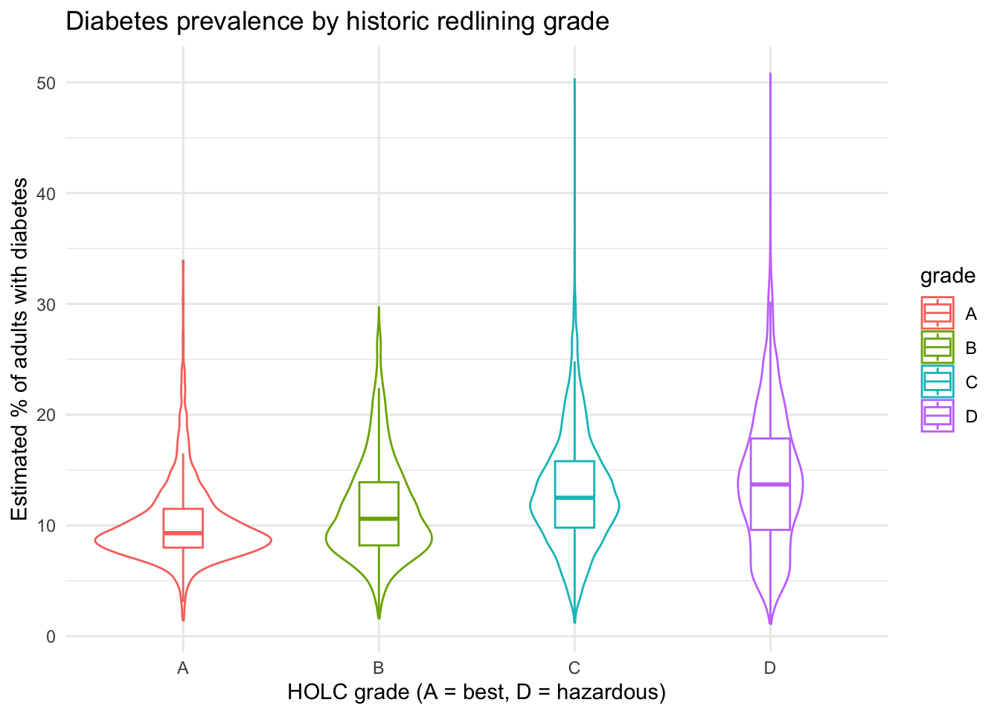
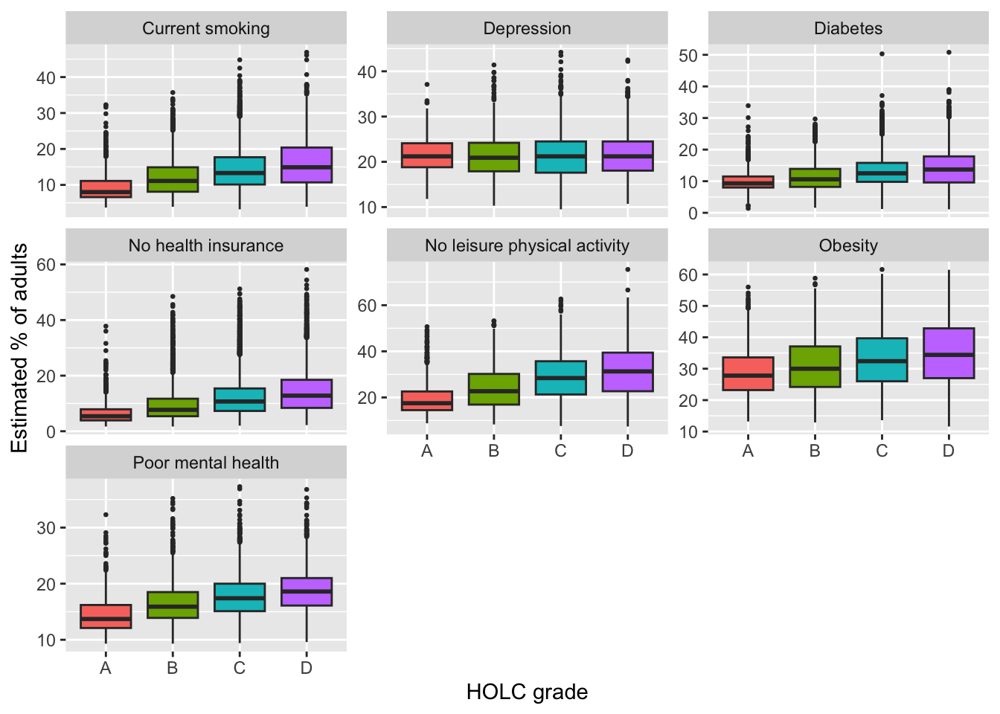
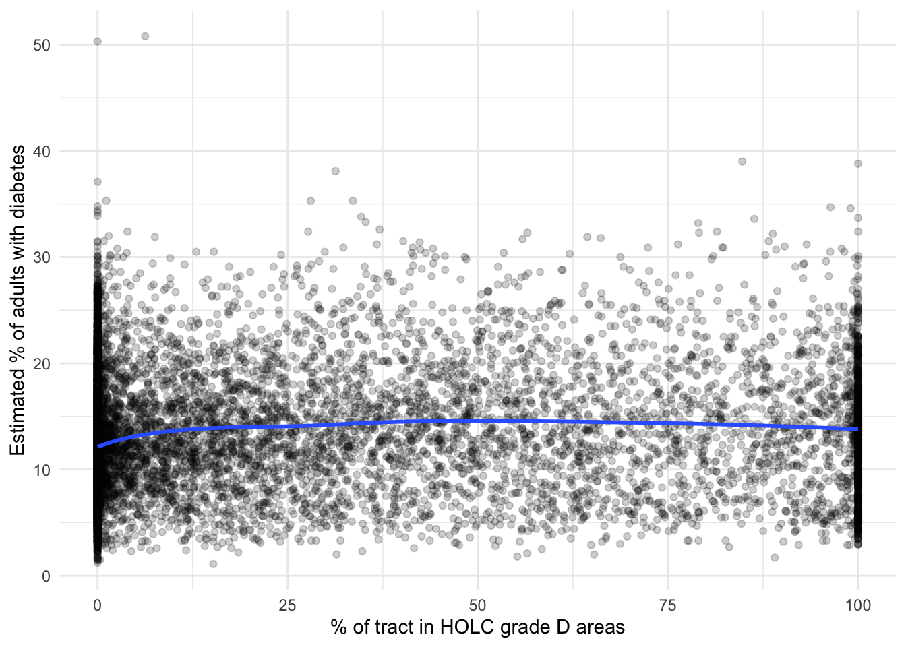
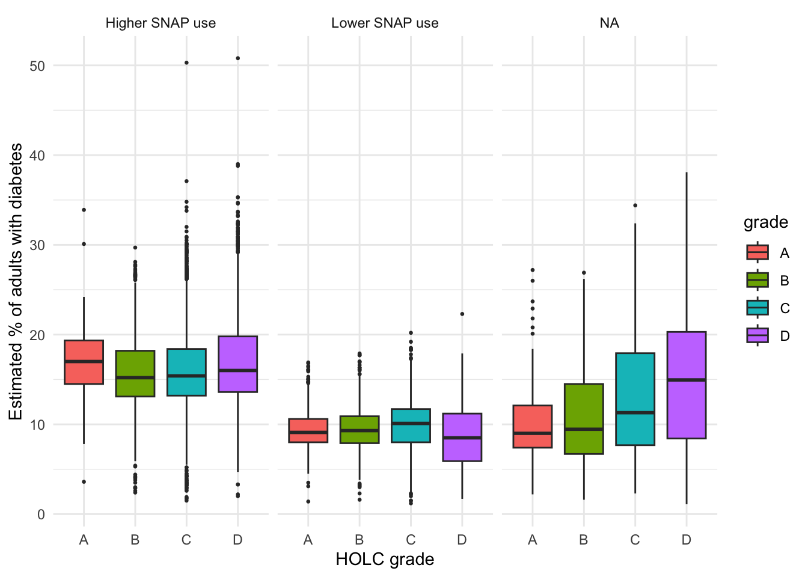
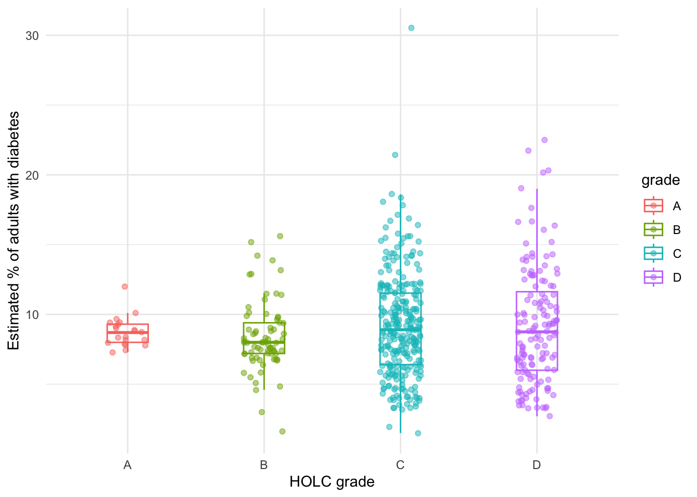

Chapter 8 Lab 7: Historic redlining and neighborhood health
Objectives:
- To understand what the HOLC grades and the PLACES health estimates actually measure
- To compare health outcomes across redlining grades using plots, summary statistics and a statistical test
- To ask whether a pattern could be explained by something else (confounding)
- To discuss what these data can and cannot tell us
This lab supports the group project idea on medical bias and racial redlining in healthcare. The data handling is short and sits in Section 3. Most of the chapter is about interpreting the data.
8.1 What are these data?
8.1.1 Redlining: the HOLC grades
File: holc_tracts.cvs in your Canvas
In 1933 the US government created the Home Owners’ Loan Corporation (HOLC) to refinance mortgages in default. Between 1935 and 1940, HOLC staff worked with local real estate appraisers, lenders and developers to grade neighborhoods in 239 cities by their “mortgage security” (how risky they were judged for lending). Each area got a letter grade:
| Grade | Color on the map | HOLC label | Typical neighborhood |
|---|---|---|---|
| A | Green | “Best” | Newer areas, mostly wealthy suburbs on the edge of town |
| B | Blue | “Still desirable” | Stable neighborhoods |
| C | Yellow | “Definitely declining” | Older neighborhoods |
| D | Red | “Hazardous” | Areas judged most risky for lending, which were largely areas with Black, immigrant or low-income residents |
The grades were based partly on the race and ethnicity of residents, not only on the condition of the housing. Lenders used these maps to decide where to offer mortgages, and neighborhoods graded D were largely cut off from lending and investment. This is where the term redlining comes from. The maps were later digitized by the University of Richmond’s Mapping Inequality project.
The file you downloaded (from the Canvas site) takes those 1930s map areas and works out, for each 2020 census tract, how much of its area falls in A, B, C and D areas. A census tract is a small statistical area, usually with a few thousand residents. The key columns are:
class1: the tract’s main grade (A, B, C or D)area_A…area_D: the percent of the tract in each gradearea_rated: the percent of the tract covered by any HOLC map (the rest is unrated,area_U)
Present-day tracts don’t match the 1930s boundaries, so many tracts overlap several grades. class1 is a simplification: it assigns each tract one grade.
8.1.1.1 Extra: Making the redlining map of Worcester
Lets look at the actual map: the 1936 Home Owners’ Loan Corporation (HOLC) zones of the City of Worcester, digitized from a scan of the original and shared by the City of Worcester through MassGIS. I downloaded a GeoJSON file from the City of Worcester and we are going to use that data to make the map.
The layer has 16 records (16 zones). The attributes listed on the page include ZoneNumber, ZoneColor and ZoneCat, and there may be more below them.
library(sf)
library(ggplot2)
library(leaflet)
zones <- read_sf("historic_redlining_zones.geojson")
zones # a data frame with a geometry column## Simple feature collection with 16 features and 9 fields
## Geometry type: POLYGON
## Dimension: XY
## Bounding box: xmin: -71.88404 ymin: 42.21005 xmax: -71.73762 ymax: 42.3412
## Geodetic CRS: WGS 84
## # A tibble: 16 × 10
## ZoneNumber ZoneColor ZoneCat ZoneNumeri ZoneDesc GlobalID OBJECTID Shape__Area Shape__Length geometry
## <chr> <chr> <chr> <int> <chr> <chr> <int> <dbl> <dbl> <POLYGON [°]>
## 1 13 Yellow Definitely D… 13 The maj… 965d2d8… 1 60512786. 41084. ((-71.81196 42.23109, -7…
## 2 15 Red Hazardous 15 A conce… 64aa3fb… 2 34900635. 46875. ((-71.78663 42.23167, -7…
## 3 11 Yellow Definitely D… 11 There i… 70f84b8… 3 102863507. 84124. ((-71.78443 42.25788, -7…
## 4 12 Yellow Definitely D… 12 The Uni… d8950b0… 4 89429315. 55038. ((-71.79699 42.25369, -7…
## 5 7 Blue Still Desira… 7 There i… 15b9a6f… 5 12787539. 16549. ((-71.78581 42.23878, -7…
## 6 4 Blue Still Desira… 4 A Swedi… 9b13af2… 6 137108911. 86483. ((-71.77258 42.30385, -7…
## 7 8 Yellow Definitely D… 8 A small… c6e92ae… 7 7768510. 12200. ((-71.78435 42.33143, -7…
## 8 14 Red Hazardous 14 Inhabit… 68a0d79… 8 10415355. 15020. ((-71.7982 42.27132, -71…
## 9 6 Blue Still Desira… 6 One of … d310e70… 9 11249968. 22502. ((-71.79955 42.27142, -7…
## 10 Business Gray Business 0 Busines… 753eeea… 10 7805580. 17524. ((-71.80407 42.2636, -71…
## 11 3 Blue Still Desira… 3 Not gre… dff825d… 11 26127877. 25358. ((-71.81584 42.2895, -71…
## 12 1 Green Best 1 High cl… 1f7eb7e… 12 39207232. 42241. ((-71.81672 42.2734, -71…
## 13 2 Blue Still Desira… 2 This pr… c01b289… 13 82389713. 71693. ((-71.82619 42.26247, -7…
## 14 5 Blue Still Desira… 5 Residen… 07a1bf6… 14 26757004. 27675. ((-71.85028 42.2413, -71…
## 15 9 Yellow Definitely D… 9 There i… 69c8f12… 15 107148858. 123478. ((-71.81195 42.23108, -7…
## 16 10 Yellow Definitely D… 10 Many in… ad96863… 16 2689644. 6723. ((-71.80867 42.26797, -7…## [1] 16## [1] "ZoneNumber" "ZoneColor" "ZoneCat" "ZoneNumeri" "ZoneDesc" "GlobalID" "OBJECTID"
## [8] "Shape__Area" "Shape__Length" "geometry"# One color per category, taken from the ZoneColor column
palette <- setNames(zones$ZoneColor, zones$ZoneCat)
palette <- palette[!duplicated(names(palette))]
palette## Definitely Declining Hazardous Still Desirable Business Best
## "Yellow" "Red" "Blue" "Gray" "Green"zones_ll <- st_transform(zones, 4326) # leaflet needs longitude/latitude
leaflet(zones_ll) %>%
addTiles() %>%
addPolygons(fillColor = ~ZoneColor, fillOpacity = 0.3,
color = "black", weight = 1,
label = ~paste0(ZoneNumber, ": ", ZoneCat))Things to ponder:
- Describe the map. Where are the “best” and the “hazardous” zones relative to each other and to the city center?
- Are the zones of one category in one block, or scattered in several places? What might that tell you about how the zones were drawn?
- Is the whole city covered by zones? Why or why not?
- Zoom into your favorite neighborhood in Worcester. Which zone is it in (if any)? Does that surprise you?
- Find the zone for Clark University. What is its number and category?
8.1.2 Health: CDC PLACES
File: places_tracts.cvs in your Canvas
PLACES is a CDC project that provides health estimates for every census tract in the US. Each row of your file is a tract. Each ..._CrudePrev column is the estimated percent of adults in that tract with a condition or behavior (for example DIABETES_CrudePrev is the estimated percent of adults who have diabetes).
Three things are important to understand about these numbers:
- They are model-based estimates, not counts. The CDC does not survey every resident of every tract. The estimates are built from a national telephone survey (the Behavioral Risk Factor Surveillance System, BRFSS) combined with census data, using statistical models. The estimates for a tract partly depend on the tract’s demographics. That means that if redlined tracts and non-redlined tracts differ in demographics, the model may carry some of that difference into the estimates.
- “Crude” means not age-adjusted. A tract with many older residents will tend to have higher prevalence of conditions like diabetes or high blood pressure, whatever its redlining history.
- Each estimate has uncertainty. The
..._Crude95CIcolumns give a 95% confidence interval for each estimate. We ignore them here, but they matter for tracts with small populations.
Question 1
- Write a research question and a hypothesis about redlining and one health outcome of your choice (see the list of columns in Section 3).
- What is the unit of observation (one row = what)?
- Redlining maps were drawn about 85 years ago. List two ways that a policy from the 1930s could still be linked to health today (think about housing, income, environment and access to care).
8.2 What do we expect to see?
Several published studies have linked historic redlining to health outcomes today:
- A study of 28 Massachusetts municipalities linked HOLC maps to Massachusetts Cancer Registry data and examined late-stage diagnosis for breast, cervical, lung and colorectal cancer (paper).
- A study of 212,179 Medicare patients having common surgeries found that outcomes got worse in a stepwise way from the “best” to the “hazardous” neighborhoods, even after accounting for current neighborhood disadvantage (abstract).
- A study by the Zilber School of Public Health and the University of Richmond’s Digital Scholarship Lab, with the National Community Reinvestment Coalition, compared HOLC maps with current census and public health data, and found greater redlining was associated with more poor mental health and lower life expectancy (summary).
So a reasonable hypothesis is that tracts graded D have a higher estimated prevalence of poor health outcomes than tracts graded A. However, a good scientist tests the hypothesis rather than assuming it, and the published studies also show the pattern is not always clear. For example, one California study of birth outcomes found the association was less clear after matching and stratifying by city (abstract).
8.3 Load and join the data (short setup)
Save both files in a data folder in your BIOL120 folder as holc_tracts.csv (the HOLC file) and places_tracts.csv (the PLACES file). Both tract IDs are 11-digit codes that can start with a zero, so we read them as text to keep the zero.
library(ggplot2)
holc <- read.csv("holc_tracts.csv", stringsAsFactors = FALSE,
colClasses = c(geoid20 = "character"))
places <- read.csv("places_tracts.csv", stringsAsFactors = FALSE,
colClasses = c(TractFIPS = "character", CountyFIPS = "character"))
# Join on the census tract ID; only tracts in both files are kept
joined <- merge(holc, places, by.x = "geoid20", by.y = "TractFIPS")
# Order the grades from "best" (A) to "hazardous" (D)
joined$grade <- factor(joined$class1, levels = c("A", "B", "C", "D"))
joined <- joined[!is.na(joined$grade), ]
dim(joined)## [1] 15183 103##
## A B C D
## 1008 3024 6809 4342Question 2
-
How many tracts are in
joined, and how many in each grade? Why isjoinedso much smaller than the full PLACES file? (Hint: which places have HOLC maps?) - Are the grades balanced? Why does it matter if one grade has far fewer tracts than another?
8.4 Comparing health outcomes by grade
8.4.1 One outcome
Start with the outcome you chose in Question 1. Here we use diabetes; change DIABETES_CrudePrev to your own.
ggplot(joined, aes(x = grade, y = DIABETES_CrudePrev, color = grade)) +
geom_violin() +
geom_boxplot(width = 0.2, outlier.shape = NA) +
labs(x = "HOLC grade (A = best, D = hazardous)",
y = "Estimated % of adults with diabetes",
title = "Diabetes prevalence by historic redlining grade") +
theme(legend.position = "none") + theme_minimal()## Warning: Removed 1028 rows containing non-finite outside the scale range (`stat_ydensity()`).## Warning: Removed 1028 rows containing non-finite outside the scale range (`stat_boxplot()`).
How to read this plot: each point is a census tract. The violin shows how many tracts have each value (wider means more tracts). The middle line of the box is the median, and the box covers the middle half of the tracts. If the boxes for A and D are shifted relative to each other, the typical tract in those grades differs. Notice that the grades overlap: some D tracts are healthier than some A tracts. A difference between grades is a difference in the typical tract, not a rule about every tract.
8.4.2 Many outcomes at once
Is diabetes special, or do many outcomes follow the same pattern? We can look at several outcomes in one figure: diabetes, poor mental health, depression, current smoking, lack of health insurance, obesity and lack of leisure-time physical activity.
outcomes <- c(Diabetes = "DIABETES_CrudePrev",
`Poor mental health` = "MHLTH_CrudePrev",
Depression = "DEPRESSION_CrudePrev",
`Current smoking` = "CSMOKING_CrudePrev",
`No health insurance` = "ACCESS2_CrudePrev",
Obesity = "OBESITY_CrudePrev",
`No leisure physical activity` = "LPA_CrudePrev")
long <- do.call(rbind, lapply(names(outcomes), function(n) {
data.frame(grade = joined$grade, measure = n, prevalence = joined[[outcomes[n]]])
}))
ggplot(long, aes(x = grade, y = prevalence, fill = grade)) +
geom_boxplot(outlier.size = 0.5) +
facet_wrap(~ measure, scales = "free_y") +
labs(x = "HOLC grade", y = "Estimated % of adults") +
theme(legend.position = "none")## Warning: Removed 7196 rows containing non-finite outside the scale range (`stat_boxplot()`).
8.4.3 How big is the difference?
A plot shows a pattern, but a number says how big it is. We calculate the median of each outcome for each grade, then the ratio of D to A.
medians <- aggregate(joined[, unname(outcomes)], by = list(grade = joined$grade), FUN = median, na.rm = TRUE)
medians## grade DIABETES_CrudePrev MHLTH_CrudePrev DEPRESSION_CrudePrev CSMOKING_CrudePrev ACCESS2_CrudePrev OBESITY_CrudePrev
## 1 A 9.3 13.7 21.2 8.0 5.4 27.8
## 2 B 10.6 15.9 20.9 11.1 7.7 30.0
## 3 C 12.5 17.4 21.2 13.3 10.7 32.4
## 4 D 13.7 18.6 21.2 14.9 12.8 34.4
## LPA_CrudePrev
## 1 17.5
## 2 22.7
## 3 28.4
## 4 31.3# Ratio of the median in D tracts to the median in A tracts
round(unlist(medians[medians$grade == "D", -1]) / unlist(medians[medians$grade == "A", -1]), 2)## DIABETES_CrudePrev MHLTH_CrudePrev DEPRESSION_CrudePrev CSMOKING_CrudePrev ACCESS2_CrudePrev OBESITY_CrudePrev
## 1.47 1.36 1.00 1.86 2.37 1.24
## LPA_CrudePrev
## 1.79Question 3
- For which outcomes is the difference between D and A largest? Smallest? Is there any outcome where D tracts are better off than A tracts?
- A ratio of 1.5 means D tracts have a median that is 1.5 times the A median. Does a ratio of 1.2 seem large or small to you? What would you need to know to decide?
- Which outcomes would you expect to be directly affected by health care access, and which by something else (e.g. environment, stress, income)? Do the results fit your expectations?
8.4.4 Is the difference real or just chance?
With thousands of tracts, even small differences can look “significant”. We use a one-way ANOVA to ask whether the average outcome differs across the four grades, and Tukey’s test to see which pairs of grades differ. Then we use a Spearman correlation to ask whether tracts with more of their area in D have worse outcomes (a “dose-response” check: more redlining, worse health?).
# Do the grades differ? (one-way ANOVA)
anova_fit <- aov(DIABETES_CrudePrev ~ grade, data = joined)
summary(anova_fit)## Df Sum Sq Mean Sq F value Pr(>F)
## grade 3 18050 6017 220.8 <2e-16 ***
## Residuals 14151 385537 27
## ---
## Signif. codes: 0 '***' 0.001 '**' 0.01 '*' 0.05 '.' 0.1 ' ' 1
## 1028 observations deleted due to missingness# How much of the variation does grade explain? (eta-squared)
ss <- summary(anova_fit)[[1]][["Sum Sq"]]
ss[1] / sum(ss)## [1] 0.04472328## Tukey multiple comparisons of means
## 95% family-wise confidence level
##
## Fit: aov(formula = DIABETES_CrudePrev ~ grade, data = joined)
##
## $grade
## diff lwr upr p adj
## B-A 1.329534 0.8137030 1.845364 0
## C-A 2.923214 2.4464373 3.399991 0
## D-A 3.924579 3.4306462 4.418513 0
## C-B 1.593680 1.2868176 1.900543 0
## D-B 2.595046 2.2621513 2.927940 0
## D-C 1.001365 0.7329378 1.269793 0# Dose-response: more of the tract in D areas -> higher diabetes?
cor.test(joined$area_D, joined$DIABETES_CrudePrev, method = "spearman", exact = FALSE)##
## Spearman's rank correlation rho
##
## data: joined$area_D and joined$DIABETES_CrudePrev
## S = 3.9486e+11, p-value < 2.2e-16
## alternative hypothesis: true rho is not equal to 0
## sample estimates:
## rho
## 0.1646604ggplot(joined, aes(x = area_D, y = DIABETES_CrudePrev)) +
geom_point(alpha = 0.2) +
geom_smooth(method = "loess", se = FALSE) +
labs(x = "% of tract in HOLC grade D areas",
y = "Estimated % of adults with diabetes") + theme_minimal()## `geom_smooth()` using formula = 'y ~ x'## Warning: Removed 1028 rows containing non-finite outside the scale range (`stat_smooth()`).## Warning: Removed 1028 rows containing missing values or values outside the scale range (`geom_point()`).
Question 4
- What does the ANOVA p-value tell you? What does it not tell you (for example, about how big the difference is)?
- Which pairs of grades does Tukey’s test say differ? Is A vs. D the biggest gap?
-
What does the correlation coefficient (
rho) say about the relationship between the share of a tract in grade D and your outcome? Is the pattern steady across the range, or does it level off or jump? - Why would we expect to find a small p-value with several thousand tracts even for a small difference?
8.5 Could something else explain the pattern?
Suppose D tracts do have more diabetes. Does that mean redlining caused it? Not necessarily. Redlined neighborhoods also tend to have lower incomes today, and income itself is linked to health. This is called confounding: a third factor linked to both the exposure and the outcome. PLACES doesn’t have income, but it does have FOODSTAMP_CrudePrev (estimated % of adults in households receiving food stamps/SNAP), which we can use as a rough indicator of poverty.
We split tracts into “lower” and “higher” poverty (above or below the median) and look at the grades within each group:
joined$poverty <- ifelse(joined$FOODSTAMP_CrudePrev > median(joined$FOODSTAMP_CrudePrev, na.rm = TRUE),
"Higher SNAP use", "Lower SNAP use")
ggplot(joined, aes(x = grade, y = DIABETES_CrudePrev, fill = grade)) +
geom_boxplot(outlier.size = 0.5) +
facet_wrap(~ poverty) +
labs(x = "HOLC grade", y = "Estimated % of adults with diabetes") +
theme(legend.position = "none") + theme_minimal()## Warning: Removed 1028 rows containing non-finite outside the scale range (`stat_boxplot()`).
##
## Higher SNAP use Lower SNAP use
## A 75 659
## B 780 1556
## C 3087 2790
## D 2296 1273Question 5
- Within each poverty group, do the grades still differ? Does the difference get smaller, stay the same or disappear compared with the plot in 4.1?
- What does the table show about how grade and poverty are related? What does that tell you about whether redlining and poverty can be separated in these data?
- Name one other variable that could confound the relationship (e.g. age, race, rural vs. urban, state). Where would you find data on it?
8.6 Looking at your own state or county
The HOLC maps cover many cities, and patterns can differ between them. Which states are in your joined data, and can you look at just one?
##
## NY CA IL OH PA NJ MI TX MA IN FL WI MO MD MN WA GA VA TN LA IA KY CO NC NE
## 2778 2144 1191 887 878 839 822 578 506 401 347 340 327 260 246 236 225 224 210 191 150 150 143 143 134
## AL OR KS OK RI UT WV AZ NH AR SC MS
## 126 125 112 108 101 76 55 33 30 26 22 19# Change "MA" to the state you want to look at
ma <- joined[joined$StateAbbr == "MA", ]
table(ma$CountyName, ma$grade)##
## A B C D
## Essex 0 3 15 4
## Hampden 1 5 12 5
## Hampshire 0 0 1 0
## Middlesex 11 38 88 33
## Norfolk 7 10 34 5
## Plymouth 1 3 17 2
## Suffolk 1 14 105 91ggplot(ma, aes(x = grade, y = DIABETES_CrudePrev, color = grade)) +
geom_jitter(width = 0.15, alpha = 0.5) +
geom_boxplot(width = 0.3, outlier.shape = NA, fill = NA) +
labs(x = "HOLC grade", y = "Estimated % of adults with diabetes") +
theme(legend.position = "none") + theme_minimal()
Question 6
- Which counties of your chosen state are in the data? How many tracts per grade?
- Does the pattern in this state look like the pattern in the whole data set? Why might it differ?
- Is the sample size large enough to draw conclusions from? How would you decide?
8.7 What can these data tell us (and what can’t they)?
Write down your answers in your own words. A strong project proposal will address these issues:
Question 7
- Correlation vs. causation. What would you need to show that redlining caused worse health, rather than being associated with it?
- Ecological fallacy. Our data are about tracts, not people. Why can’t we say that a person living in a D tract is less healthy than a person in an A tract?
- Model-based estimates. If the PLACES estimates use demographics to predict health, how might that affect a comparison between grades?
-
The unit of analysis. A tract can contain areas of
several grades, but
class1gives it one grade. What might we lose? - Time. The maps are from the 1930s, the health estimates from the 2020s, and neighborhoods have changed in between. How might that weaken or blur the pattern?
- Medical bias. These data describe neighborhoods and health outcomes. Do they tell us anything about bias within the health care system (for example, how patients are treated)? What data would?
8.8 Turning this into your group project
Your project proposal could build on this starter by:
- Choosing a specific, testable question (for example: “Is the difference between A and D tracts in poor mental health larger than the difference in diabetes?”).
- Adding a second data source (for example, census data on income or race/ethnicity by tract) to deal with confounding.
- Focusing on a region (such as Massachusetts) where you can look closely at individual cities.
- Using a different outcome that fits your question, including
COGNITION_CrudePrev(cognitive disability), which could link to the Alzheimer’s project idea. - Reading one published study on redlining and health and comparing its methods and limitations to yours.
Question 8
- Write a one-sentence research question for your group project that builds on this analysis.
- List the data you would need that you don’t have yet.
- What is the biggest weakness of the analysis you did today, and how would you address it?
8.9 Sources and data
- HOLC grades by census tract: Diversity Data Kids, “Download HOLC neighborhood grades for U.S. census tracts” (https://www.diversitydatakids.org/download-holc-neighborhood-grades)
- Historic Redlining Zones (Worcester, MA): City of Worcester, via MassGIS (https://gis.data.mass.gov/datasets/worcesterma::historic-redlining-zones)
- Health estimates: CDC PLACES, Census Tract Data (GIS-friendly format), 2025 release (https://data.cdc.gov/d/yjkw-uj5s)
- Original HOLC maps: Nelson, Winling, Marciano, Connolly, et al., Mapping Inequality: Redlining in New Deal America, University of Richmond Digital Scholarship Lab